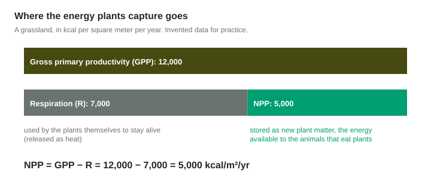

Every ecosystem's food supply starts with a producer: a plant, an alga or a bacterium that makes its own food from light. How fast producers do this decides how much life an ecosystem can support. A rainforest and a desert both get sunshine, but one turns it into plant matter many times faster than the other. This topic is about measuring that rate and what limits it.
Gross and net
Primary productivity is the rate at which producers capture energy by photosynthesis and store it as organic matter. It is a rate, so it has units like kilocalories per square meter per year (kcal/m²/yr) or grams of plant matter per square meter per year.
- Gross primary productivity (GPP) is the total rate of capture.
- Producers are alive, so they respire: they break down some of that sugar for their own energy, releasing it as heat. Call that R.
- Net primary productivity (NPP) is what is left, stored as new leaves, wood, roots and seeds:
Think of a paycheck: GPP is the gross pay, respiration is the cost of living, and NPP is the take-home pay. Only NPP is available to the animals that eat plants, and to everything that eats them.

Worked example. A salt marsh has a GPP of 9,000 kcal/m²/yr; its plants use 5,500 kcal/m²/yr in respiration. Find NPP.
Setup:
Answer: 3,500 kcal/m²/yr. To go the other way, add: if NPP is 2,000 and R is 4,000, then
What limits productivity
Photosynthesis needs light, water, CO2, a suitable temperature and nutrients such as nitrogen and phosphorus. Whichever is scarcest sets the limit, so adding more of something that is already plentiful changes little.
| Ecosystem | Productivity per m² | Main limit |
|---|---|---|
| Tropical rainforest, swamps and marshes, estuaries, coral reefs | highest | few limits: warm, wet, sunny, nutrients supplied |
| Temperate forest, grassland, farmland | medium | cold winters, water in dry years, nutrients |
| Open ocean | low | nutrients scarce in sunlit surface water |
| Desert | very low | water |
| Tundra | very low | cold, short growing season |
In water, light itself runs short with depth, and not all colors equally: most red light is absorbed in the top meter or so, while blue light reaches deeper in clear water. Algae that live deep have pigments that capture the blue light that is left.
The open ocean is low per square meter, but the ocean is so large that, in total, ocean algae carry out roughly half of Earth's photosynthesis.
Measuring it: the light and dark bottle method
In water, productivity can be measured with dissolved oxygen, since photosynthesis releases oxygen and respiration uses it.
Worked example. Lake water starts at 8.0 mg/L of oxygen. After 24 hours, a clear bottle reads 9.5 mg/L and a dark bottle 7.4 mg/L.
Dark bottle: no light, so no photosynthesis. The drop is respiration: mg/L per day.
Clear bottle: photosynthesis and respiration together, so the change is net productivity: mg/L per day.
Gross productivity = net + respiration mg/L of oxygen per day.
Designing a productivity experiment
To test what limits producers, change one factor and measure productivity. A hypothesis must say a direction: "If more nitrate is added, then algae growth will increase, because nitrogen is often a limiting nutrient." The independent variable is what you change (nitrate); the dependent variable is what you measure (algae growth, such as chlorophyll or dissolved oxygen produced). A control, jars with no nitrate added, gives a baseline to compare with. Keep everything else the same: light, temperature, water volume, starting algae.